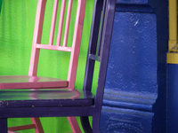
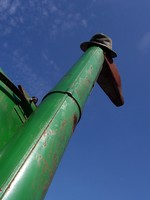
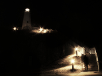

Next Photo
-
Vote
The Valley Of The Shadow
Psalm 23:4 - "Even though I walk through the valley of the shadow..."
To me, there is a lot to this picture. In it I see beauty as well as an emotional tie. The beauty lies in the simplicity and the play between light and dark. The lighthouse itself is pretty and the lights and walkway create an enjoyable scene.
The emotional ties, though, are what make the heart of this photo. You can see the battle of light and dark in the scene, going on all around. The walkway is representative of a path through life, and though we walk through darkness at times, you can always see the end. The person at the bottom is only beginning the journey towards the lighthouse, a shining beacon.
More...
Title: The Valley Of The Shadow
Description: Psalm 23:4 - "Even though I walk through the valley of the shadow..."
To me, there is a lot to this picture. In it I see beauty as well as an emotional tie. The beauty lies in the simplicity and the play between light and dark. The lighthouse itself is pretty and the lights and walkway create an enjoyable scene.
The emotional ties, though, are what make the heart of this photo. You can see the battle of light and dark in the scene, going on all around. The walkway is representative of a path through life, and though we walk through darkness at times, you can always see the end. The person at the bottom is only beginning the journey towards the lighthouse, a shining beacon.
Keywords: light dark lighthouse path valley fear imagery emotional contrast battle epic
Hidden: n
Date added: Sat Apr 07 15:42:14 CDT 2007
Date taken: Tue Jan 16 14:31:57 CST 2007
Camera: Fujifilm Finepix S5100
Resolution: 2272 x 1704
Mode: Shutter Priority
Shutter speed: 1/640
Flash: Not Used
Exposure time: 1/640
Iso: 100
Metering: Matrix
Aperture: f/6.3
Focal length: 10.7mm
Artist: NathanielGuy Mahieu
Copyright: 2006 NathanielGuy Mahieu
Views: 1098


